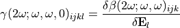

6.2. Optical Parameter¶
In this page we will present in more details what can be done in  regarding optical properties calculation. Some of the informations are shared with other pages, so first let’s see a global overview of what can be done and how.
regarding optical properties calculation. Some of the informations are shared with other pages, so first let’s see a global overview of what can be done and how.
6.2.1. What can I do?¶
First of all, here are the optical property available:
Name |
user-accessibility |
CPU-demanding |
|---|---|---|
NYA |
NYA |
|
NYA |
NYA |
|
easy |
few-large |
|
easy |
few-very large |
|
medium |
large-very large |
For all these property, you can compute them at the QM level using  or used fixed value. At lease, two reasons can lead you to compute QM-level optical properties:
or used fixed value. At lease, two reasons can lead you to compute QM-level optical properties:
Environment effects:
In condensed phase, the environment surronding a molecule will creat an electrostatic field. This electrostatic field impacts the molecule electronic degree of freedom, and therefore its optical responses. You also may have electronic delocalisation accross molecules. In these cases, the optical response of each molecule can be unique: they depends on there environment.
Molecule geometrical deformation:
For large enough molecule, the geometrical conformation can affect the molecular optical response. Therefore, even in vacuum, these optical properties can be distributions.
Thus, all of these property can be computed at the QM level using several environment description. All these possibilities are presented in the electrostatic emmbeding scheme page.
Name |
description |
user-accessibility |
CPU-demanding |
|---|---|---|---|
No effect of the neighborgs |
easy |
few-medium |
|
Neigborgs effect only threw electrostatic field |
medium-hard |
medium-large |
|
Neigborgs effect can be by electrostatic field or QM |
hard |
large-very large |
Regarding the QM calculation by itself, it is presented in this page.
For all these property, you can record them in the molecular or laboratory frame. Using the molecular frame, you have the effect of the neigborhood and the geometrical deformation that can be study. Within the laboratory frame, you have also these effect, plus the orientation of the molecule in the laboratory frame. The laboratory frame is closer to the experimental observation while the molecular frame is more easy to understand. To go from one frame to another, the ‘molecular rotational matrix’ is used, see here.
In the following Table is recorded the name used in for the optical property in the molecular and laboratory frame:
Name |
Molecular frame |
Laboratory frame |
|---|---|---|
Dipole moment |
NYA |
NYA |
Quadrupole moment |
NYA |
NYA |
Polarizability |
alpha |
iota |
First Hyperpolarizability |
beta |
chi |
Second Hyperpolarizability |
gamma |
Gamma |
Now, let’s see how to required optical calculation and the way it is computed.
6.2.2. Optical Property Calculation¶
6.2.2.1. Generalities¶
For the polarizability or the hyperpolarizability, you can compute them at the QM level or not using alpha_calculation_style or beta_calculation_style.
If the polarizability or hyperpolarizability is fixed for all the molecule of an MT, the attribute L_alpha_ref or L_beta_ref should be set to give
If you compute them at the QM level, the attribute qmparameter should be also intizialised to controle how to perform the
If you are using electrostatic emmebedded scheme in the QM calculation, you may wants to track the electrostatic field generated by the neighborhood: see this page
If you need to compute QM calculations, some attribute of the GP have to be set, see this page for general overview and this one for details
6.2.2.2. Dipole and Quadrupole¶
Today, the dipola and quadrupole are accessible within the QM calculation results. No automatic reading is available in Frog.
6.2.2.3. Polarizability¶
To get the polarizability, first you have to defined at least one diagram alpha or iota for the molecular or laboratory frame respectively. Then, you have to set the Optical Parameter attributes alpha_calculation_style using the read_optic_properties_input function to define how the polarizability should be computed.
If you want to compute the polarizability at the QM level, set OpticalProperty.alpha_calculation_style to ‘QM’. In this case, the attribute qmparameter should also be provided along with many GP parameters. The polarizability are computed using the frequency-dependent response theory within . You may defined several frequency using the attribute REF.
Todo
mettre des examples?
6.2.2.4. First-Hyperpolarizability¶
To get the polarizability, first you have to defined at least one diagram beta or chi for the molecular or laboratory frame respectively. Then, you have to set the Optical Parameter attributes beta_calculation_style using the read_optic_properties_input function to define how the polarizability should be computed.
If you want to compute the hyperpolarizability at the QM level, set OpticalProperty.beta_calculation_style to ‘QM’. In this case, the attribute qmparameter should also be provided along with many GP parameters. The hyperpolarizability are computed using the frequency-dependent response theory within . You may defined several frequency using the attribute REF.
Todo
mettre des examples?
6.2.2.5. Second-Hyperpolarizability¶
Today, the second-hyperpolarizability within an electrostatic emmebbeding is not computed by . Therefore, to get its value you have to do it using a finite field methode. In short, several QM calculation are performed for the same molecule with varying electrostatic field shone in top of the one generated by the environment. The first hyperpolarizability is recorded for every electrostatic field: the second-hyperpolarizability is defined to be the slope:

A tutorial to compute it is available HERE.
If you want to compute the second hyperpolarizability in the vacuum phase, it is possible in . However, since has been specifically designed to deal with electrostatic emmebedded QM calculation, no automatic procedure is available to deal with this case. However, you can:
Initialized all the QM calculation in the vacuum phase using
Change the dalton.dal file for the molecule you want to have the second-hyperpolarizability – see the well-written
Run the QM calculation, and extract by yourself the second-hyperpolarizability.
Note
If you really want to have the second-hyperpolarizability in the vaccum phase automatically, please contact us.
6.2.3. Which molecule should be QM-treated?¶
Finaly, an important aspect to the calculation of optical property at the QM level is the numerical cost. Depending on the system you are dealing with, you may compute the response of only some molecules according to several parameters:
The Molecule Type
This is already done by default since you define for each type of molecule what analysis should be perform!
The Molecule position
Historically, we have in mind 2D interfaces like liquid-gas. In this case, the main interest is given to the molecule close to the interface. Therefore, to compute at the QM level the response of molecule only if they respect some geometrical-based conditions, use the OpticalParameter.where_to_run_QM attribute.
The molecule number
If you want to sample the optical property of only few molecule in time, you may want to use the OpticalParameter.selection_tool attribute. This attribute allows you to select only some molecules to reduce further the number of QM calculations.
Note
All of these selection can be made together. Only the molecules respecting all the condtions will undergo a QM calculation.
In the following is presented in more details the Optical Parameter object. You will find also more details about the possible attribute and options.
6.2.4. Optical Parameter object:¶
6.2.4.1. Initialization¶
The Optical Parameter object is defined in the MoleculeTypeParameter object of an MoleculeType: myMT.mtparameter.optparameter. It contains the parameters needed to deal with optical analysis. These parameters are initialized using the MT function:
- Frog.class_Molecule.MoleculeType.read_optic_properties_input(self, GP, alpha_calculation_style=False, L_alpha_ref=False, beta_calculation_style=False, L_beta_ref=False, beta_order='dipole', effective_field_on_beta=False, efparameter=False, effective_field_distance_neigh=False, where_to_run_QM=False, qmparameter=False, selection_tool=False)
Defines the Optical Parameter of this MT.
One input is mandatory: the GlobalParameter (GP) of the run as first argument.
The other arguments are optional in the sens that they have a default value is not given by the user. See the Optical Parameter attribute for more information about them.
Example
A good habit can be to first defines the attributes value in your input file, and then to pass them to this function:
alpha_calculation_style = 'Fixed for all' L_alpha_ref = np.array([[9.8, 0, 0], [0, 9.8, 0], [0, 0, 9.8]]) myMT.read_optic_properties_input(GP, alpha_calculation_style=alpha_calculation_style, L_alpha_ref=L_alpha_ref)
Warning
Today, the attributes effective_field_on_beta, efparameter and effective_field_distance_neigh SHALL NOT be used. They were designed for effective field calculation, which is not yet complete in Frog.
Note
This function was made to make the user input simplier, right?
Note
In the rest of the documentation, this function call is often written as read_optic_properties_input(…, the_argument=value, …). In any case, you should defines always the GP first, and all the other attribute you need in only one call. If you are not using an attribute, just do not define it or set its value to the default one.
All the attribute of this object are the same for all the time steps, except 2 attributes:
OpticalParameter.L_QM_todo: contains the QM calculation to perform for each time step
OpticalParameter.qmparameter: some attributes may change depending on the emmebbeding style used.
Now here is the list of all the attributes available in the Optical Parameter. Note that some of them are not user defined – meaning that they depend on the option you have chosen, but is not directly set by the MoleculeType.read_optic_properties_input function.
6.2.4.2. Attributes¶
- OpticalParameter.alpha_calculation_style
Type [bool or str]
If no analysis (i.e. diagram) declared are of type alpha or iota, the alpha_calculation_style have to be False, default value. Otherwise the run will crash. In the same way, if you have declared an alpha or iota analysis, you have to set alpha_calculation_style to one of the possible value:
‘Fixed for all’:
The alpha tensor is given by the attribute OpticalParameter.L_alpha_ref . In this case, the polarizability in the molecular frame is fixed and equal to this value. The polarizability in the laboratory frame is given by the molecule orientation: it is a product of this OpticalParameter.L_alpha_ref with the SingleMolecule.rot_mat using the function: L_iota = Frog.toolbox.rotate_2nd_order_tensor(SingleMolecule.rot_mat.T, OpticalParameter.L_alpha_ref). Note that the rotational matrix, SingleMolecule.rot_mat is given by the molecular library file function Frog.Molecules.my_MT.compute_rotational_matrix .
‘QM’:
The polarizability is computed for each molecule selected, see the OpticalParameter.where_to_run_QM and OpticalParameter.selection_tool attributes, at the QM level. The polarizablity is computed using the parameters provided in the OpticalParameter.qmparameter object. For a single molecule, the polarizability in the laboratory frame is computed (iota), and the alpha is obtained using the molecule orientation: L_alpha = toolbox.rotate_2nd_order_tensor(SingleMolecule.rot_mat, L_iota) .
Example
In your input parameter file, declare the OpticalParameter.alpha_calculation_style value using:
myMT.read_optic_properties_input(GP, ..., alpha_calculation_style=your_value, ...)
where the ‘…’ stands for the other parameter you may need to use.
Note
No ‘iota_calculation_style’ has been defined since the alpha and iota are related by the molecule orientation.
- OpticalParameter.L_alpha_ref
Type [bool or list]
If the OpticalParameter.alpha_calculation_style=’Fixed for all’, the OpticalParameter.L_alpha_ref has to be set to a 3x3 list. This value is used to defined the polarizability of every molecule of this MT in their molecular frame.
If OpticalParameter.alpha_calculation_style is set to any other value, OpticalParameter.L_alpha_ref should be False, its default value.
Example
In your input parameter file, declare the OpticalParameter.L_alpha_ref value using:
myMT.read_optic_properties_input(GP, ..., L_alpha_ref=your_value, ...)
where the ‘…’ stands for the other parameter you may need to use.
Note
The unit to declare the polarizability should be atomic unit. For instance, the polarizability of water at optical freuqnecy is around: L_alpha_ref = [[9.8, 0, 0,], [0, 9.8, 0], [0, 0, 9.8]].
- OpticalParameter.beta_calculation_style
Type [bool or str]
If no analysis (i.e. diagram) declared are of type beta or chi, the beta_calculation_style have to be False, default value. Otherwise the run will crash. In the same way, if you have declared a beta or chi analysis, you have to set beta_calculation_style to one of the possible value:
‘Fixed for all’:
The beta tensor is given by the attribute OpticalParameter.L_beta_ref . In this case, the hyperpolarizability in the molecular frame is fixed and equal to this value. The hyperpolarizability in the laboratory frame is given by the molecule orientation: it is a product of this OpticalParameter.L_beta_ref with the SingleMolecule.rot_mat using the function: L_chi = Frog.toolbox.rotate_3rd_order_tensor(SingleMolecule.rot_mat.T, OpticalParameter.L_beta_ref). Note that the rotational matrix, SingleMolecule.rot_mat is given by the molecular library file function Frog.Molecules.my_MT.compute_rotational_matrix .
‘QM’:
The hyperpolarizability is computed for each molecule selected, see the OpticalParameter.where_to_run_QM and OpticalParameter.selection_tool attributes, at the QM level. The hyperpolarizablity is computed using the parameters provided in the OpticalParameter.qmparameter object. For a single molecule, the hyperpolarizability in the laboratory frame is computed (chi), and the beta is obtained using the molecule orientation: L_beta = toolbox.rotate_3rd_order_tensor(SingleMolecule.rot_mat, L_chi) .
Example
In your input parameter file, declare the OpticalParameter.beta_calculation_style value using:
myMT.read_optic_properties_input(GP, ..., beta_calculation_style=your_value, ...)
where the ‘…’ stands for the other parameter you may need to use.
Note
No ‘chi_calculation_style’ has been defined since the beta and chi are related by the molecule orientation.
- OpticalParameter.L_beta_ref
Type [bool or list]
If the OpticalParameter.beta_calculation_style=’Fixed for all’, the OpticalParameter.L_beta_ref has to be set to a 3x3x3 list. This value is used to defined the hyperpolarizability of every molecule of this MT in their molecular frame.
If OpticalParameter.alpha_calculation_style is set to any other value, OpticalParameter.L_beta_ref should be False, its default value.
Example
In your input parameter file, declare the OpticalParameter.L_beta_ref value using:
myMT.read_optic_properties_input(GP, ..., L_beta_ref=your_value, ...)
where the ‘…’ stands for the other parameter you may need to use.
Note
The unit to declare the hyperpolarizability should be atomic unit. For instance, the hyperpolarizability of water in vacuum at the DFT/CAMB3LYP level with basis d-aug-cpVTZ at 800~nm is: L_beta_ref = [[[0, 0, -12.4,], [0, 0, 0], [-12.4, 0, 0]], [[0, 0, 0,], [0, 0, -7.4], [0, -7.4, 0]], [[-12.5, 0, 0,], [0, -5.0, 0], [0, 0, -15.3]].
- OpticalParameter.where_to_run_QM
Type [bool or list]
This attribute set a first set of selection to the molecule which should be QM-treated. Indeed, you may want to not perform for all the molecule of a MT QM calculations: it may be too much time-consuming for litle interest. Therefore, this attribute works very similary to the DiagramParameter.special_selection. Another selection can be added in top of this one usin the attribute OpticalParameter.selection_tool. The molecule that will be QM computed have to respect all the 3 attributes restrictions.
The format of this attribute is very similar to the geometrical discretisation option when declaring a diagram. As an user, when declaring list of diagram to performed, you can define this special geometrical selection using:
myMT.read_optic_properties_input(GP, ..., where_to_run_QM=where_to_run_QM)
Here are the available values for where_to_run_QM:
False or True:
No extra special selection is made. All the molecule of the MT may be QM treated.
In this case, the OpticalParameter.where_to_run_QM attribute is set to [-1].
[‘All’]:
No extra special selection is made. All the molecule of the MT may be QM treated.
In this case, the OpticalParameter.where_to_run_QM attribute is set to [-1].
[‘Plane_ij’, bin_number, list_of_bin]:
For each time step, the box is discretized along plane with the axis ij. bin_number number of bin is used. Every molecules are assigned to one of these bin according to there mean position. If this bin is within the list_of_bin, the molecule is QM treated.
In this case, the OpticalParameter.where_to_run_QM attribute is set to [axis where the space is decretize (0, 1 or 2), bin_number, list_of_bin]
[‘Layer’, nbr_layer, list_layer]:
For each time step, the molecule are assigned to a layer, using ‘nbr_layer’ number of layer. If a molecule is in the layer number given by list_layer, it is QM-treated.
In this case, the OpticalParameter.where_to_run_QM object is set to [10, 2*nbr_layer+1, list_layer]
Example
myMT.read_optic_properties_input(GP, ..., where_to_run_QM=['Plane_xy', 100, [60, 61, 62, 63, 64, 65, 66]], ...)
where the ‘…’ stands for the other parameter you may need to use.
The box in discretize along the z axis using 100 bins. Only the molecule within the 60 to 66 bin are treated using QM. The other molecule will have a null value regarding the optical analysis based on QM calculation. For instance, if OpticalParameter.beta_calculation_style = ‘QM’, the molecule which does not respect the previous condition will have for beta and chi 3x3x3 matrices with only zero values.
Note that the list of authorized bin can be not continous.
Example
where_to_run_QM = [‘Layer’, 4, [-4, -3, 0, 1, 4]]
Here, nbr_layer = 4. A molecule can be assigned to the layer number 4, 3, 2 or 1 for the upper interface (the 1st is the closest to the bulk phase, the 4th the farthest), to -4, -3, -2, -1 for the lower interface (the -4 is the farest from the bulk phase) or to 0 for the molecule in the bulk-like phase. Only molecule with layer number -4, -3, 0, 1 or 4 will be QM-treated using Dalton.
Note that the list of authorized layer can be not continous.
Note
This condition is made after the one regarding the diagram parameters – given by DiagramParameter.special_selection .
Note
This selection does not affect the diagram space discretization. Keep just in mind that if a molecule does not respect the OpticalParameter.where_to_run_QM conditions, its optical value may be zeros. Therefore, the total diagram can contains molecules which are QM-treated, and other with zero values.
Note
For develloper: the concrete action of OpticalParameter.where_to_run_QM is made in geometry_manager.optparameter_where_to_run_QM_molecule. Use this function to update new option for this attribute.
- OpticalParameter.selection_tool
Type [bool or list or str]
Defines another way of selecting the molecule of this MT which should be QM-treated. This method are very different from the one proposed in OpticalParameter.where_to_run_QM: they are not based on laboratory-based geometrical selection. Both selection, OpticalParameter.where_to_run_QM and OpticalParameter.selection_tool, can be used simultaneously to minimize the QM calculation time.
Today, the option available in this attribute is small, but if you want to implement easy-to-use selection for the QM calculation, you may want to define them here.
Possible value for OpticalParameter.selection_tool:
False:
Default value, no extra selection is defined using this attribute.
In this case, the OpticalParameter.selection_tool is set to False.
[‘traking_molecules’, list of the molecule]:
Only the molecule with there molecule number in the list provided as second argument are QM-treated. Note that the labbeling is the same as the one given in MoleculeType.where_are_molecules: it refers to the MD topology labelling.
In this case, the pticalParameter.selection_tool is set to ‘traking_molecules’. The list of the authorised molecule os stored in OpticalParameter.L_molecule_tracked.
Example
traking_molecules = ['traking_molecules', [1005, 1050]] myMT.read_optic_properties_input(GP, ..., traking_molecules=traking_molecules, ...)
where the ‘…’ stands for the other parameter you may need to use. In this case, only the molecule numbered 1005 and 1050 can be QM-treated for all the time step. It is not the 1005th and 1050th molecule of the MT, but the 1005th and 1050th molecule of the MD labbeling – except when you have only one MT where the 2 labbeling are the same or if it is the first MT declared.
Note
For develloper: the concrete action of OpticalParameter.selection_tool is made in geometry_manager.optparameter_selection_tool_molecule. Use this function to update new option for this attribute.
- OpticalParameter.L_molecule_tracked
Type [bool or list]
Contained the list of the autorised molecule by the OpticalParameter.selection_tool attribute.
Note user defined.
- OpticalParameter.qmparameter
Type [bool or QMParameter]
The QMParameter for this MT. This attribute has to be defined if one optical analysis required QM calculation. If no QM calculation is needed for this MT, should be set to False. See the part relating to this QMParameter class for more information about it.
Example
To set the QMParameter, initialize it first, then fill the required attribute. Enventualy set it to the OpticalProperty using the usual read_optic_properties_input function:
qmparameter = QMParameter() # empty object qmparameter.calculation_style = 'PE' # example of attribute qmparameter.theory_lv = 'DFT' # example of attribute myMT.read_optic_properties_input(GP, ..., qmparameter=qmparameter, ...) # set it to the optparameter
- OpticalParameter.IS_run_QM
Type [bool]
True if there are QM calculation to perform, False otherwise.
Not user defined
Note
Instead we can use the qmparameter to know if there is QM calculation or not for this optparameter. But we felt that it would be more readable/understanable this way.
- OpticalParameter.L_QM_todo
Type [bool or list]
The list of the localisation of the QM calculation to perform for this MT at this time step. This list is built after the first part and is used as a starting point during the second part to built all the QM calculation to do.
You can check by opening this list at a given time step that the dalton files are indeed written in the directories and that the molecule respect the OpticalParameter.where_to_run_QM and OpticalParameter.selection_tool requirements.
If no QM calculation should be done for this MT, OpticalParameter.L_QM_todo is set to False. If there can be QM calculation but none have to be done (because the QM calculation have aloready been performed or if no molecule respect both OpticalParameter.where_to_run_QM and OpticalParameter.selection_tool requirements) for this time step, OpticalParameter.L_QM_todo = []
Not user defined
- OpticalParameter.pe_level
Type [int]
The maximal PE level used for this MT. It should be the same as the one defined in the OpticalParameter.qmparameter in many cases.
If no electrostatic environement have to be built, default value, OpticalParameter.pe_level = -1.
Not user defined
- OpticalParameter.compute_electric_field_PE
Type [bool]
Set to True of there are diagrams defined which track the electrostatic field generated by the environment during the QM calculation. Originaly related to the option ‘PE’ of an electric_field analysis.
If set to False, default, the electric field generated by the environement for each configuration is not computed by Frog nor store. But Dalton will still do it during the QM calculation.
Not user defined